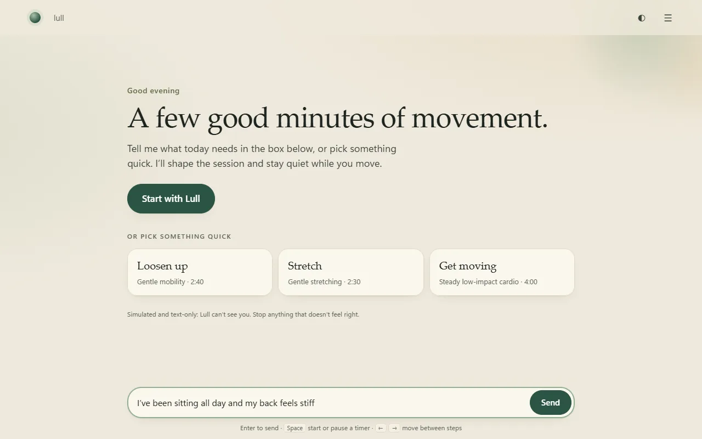
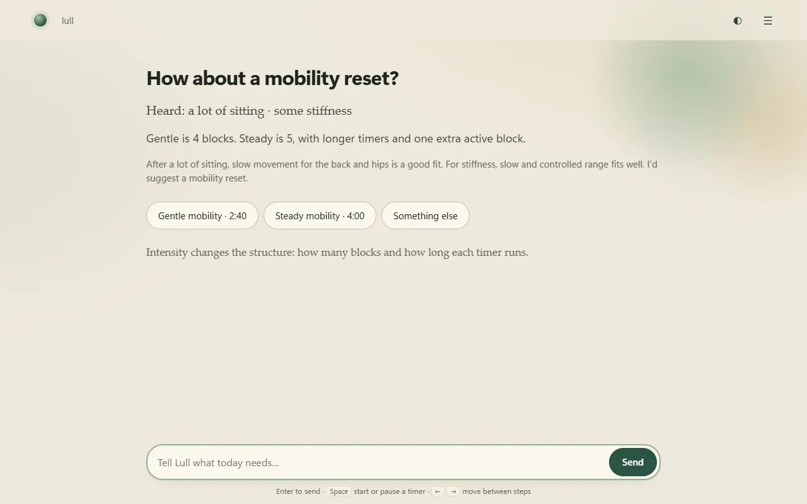
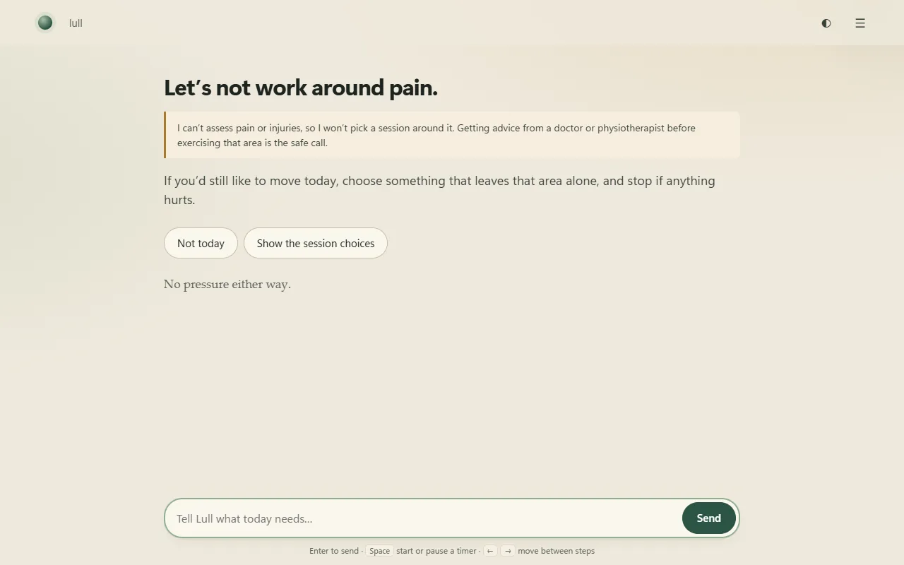

For HR & People Ops teams
Prove your wellbeing spend is working. Without watching anyone.
Lull gives employees a three-minute guided break they actually come back to, and gives you team-level proof that it's being used. No individual is ever visible to HR.
Team totals onlyTeams under 10 hiddenRuns in the browser, no install

The problem
You've bought wellbeing tools before.
I can't show my CFO it worked.
At renewal, all you have is a sign-up count and a gut feeling.
Everyone joined in launch week. By week four, almost nobody.
Most platforms are built for the launch email, not for the fourth busy Tuesday.
The moment it feels tracked, people quietly stop using it.
If a tool can see individuals, employees treat it as surveillance, and they're right to.
Lull is built around all three: small enough to use between meetings, measured from day one, and private by design.
How it works
Three minutes for them. One clear answer for you.
-
01
They say how they feel, in their own words
"Stiff back after a day of calls." "Ten minutes, low energy." No menus to learn, no account to create. It opens in the browser from a link you share.
Employee
-
02
They get one short guided session
A two-to-four minute movement break chosen for what they said, with the reason shown and the real length up front. "Too much" makes it gentler; "too easy" steps it up.
Employee
-
03
You see whether it's working, team by team
Who tried it, who came back, how it's trending week on week. Totals only. Enough to judge a pilot, never enough to identify a person.
HR
Privacy, built in
Try to find one person. You can't.
This is a working mock of the view you'd get. Switch weeks, hover the locked rows, then try to see individuals.
- Team and company totals only
- Teams under 10 people are hidden
- If only one team is small, a second is hidden too, so nobody can be worked out by subtraction
- No names, no individual sessions, nothing anyone typed
Weekly active, by team
Sample data · a made-up 103-person company
Safety
When someone says something worrying, rules decide. Not the AI.
Before anything else, every message is checked against a fixed set of rules that can't be switched off. The AI can add caution. It can never remove it.
- Urgent symptoms such as chest pain or trouble breathing: no session, a clear pointer to emergency help.
- Pain or injury: the session stops and suggests a doctor or physiotherapist.
- Always Lull's own wording, written in advance, never improvised by a model.

The pilot
6 weeks. Targets agreed before day one.
We agree what success looks like with you up front, and you get a plain report at the end. If it doesn't hit the numbers, you'll know, and so will we.
Success criteria
- ≥ 50%
of invited employees try it
Started at least one session during the pilot.
- ≥ 1 in 3
come back every week
The number that matters after the launch-week spike fades.
- Week 6
a decision on agreed KPIs
Continue, change or stop, based on the targets set on day one.
Walkthrough
See it in 2 minutes
From an employee typing how they feel, through a session, to the team view HR sees.
Screen recording of the working product. All figures are sample data.
Before you ask
What HR teams ask first
Where does employee data live?
A person's activity log stays in their own browser, and they can switch it off or clear it. The team view is built from totals only: no names, no individual sessions, nothing anyone typed. If the optional AI mode is turned on, typed messages are sent to Anthropic to be read; that is off by default.
Does IT need to set anything up?
No. Lull runs in the browser from a link you share. No installs, no accounts, no SSO project to start a pilot.
Is this a mental-health or medical product?
No. Lull offers short, gentle movement breaks for people who sit all day. It doesn't diagnose or treat anything, and it stops and points to proper help when someone mentions pain or symptoms.
What happens after six weeks?
You get a plain report against the targets agreed on day one: how many tried it, how many kept coming back, how they felt afterwards. Then you decide to continue, change or stop.
We're looking for 3 pilot partners.
Indian companies of 50 to 500 people, with an HR lead who wants a wellbeing number they can stand behind. Not ready for a pilot? A 15‑minute call on what you'd need is just as useful.